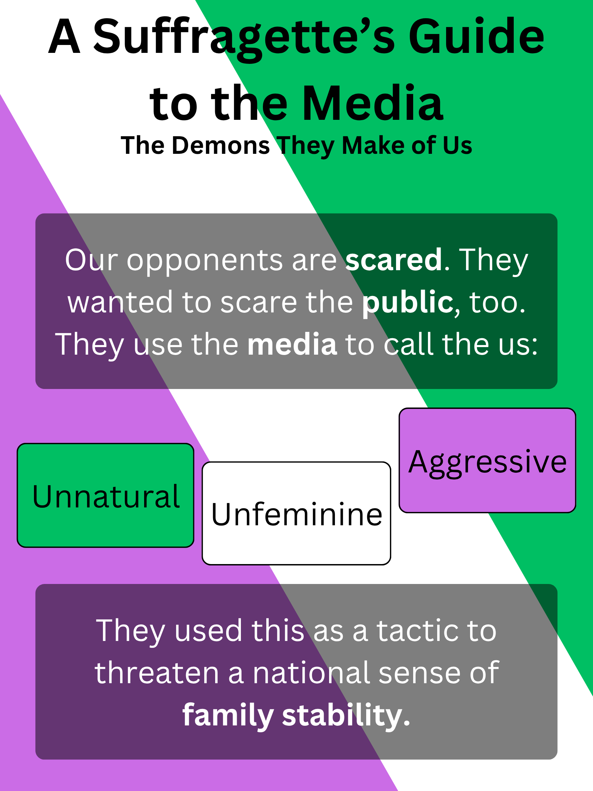

The Suffragettes fought many difficult battles, many of which are still being fought today. One important battlefield they needed to deal with was the media and public relations. They wanted to portray themselves as soldiers and martyrs, but had to contend with frames thrust upon them by their opposition and other suffragist groups. The following are some posters which might exemplify a sort of “brand guidelines” for the Suffragettes. We’ve titled it; “A Suffragette’s Guide to the Media.”

Sources
Bradshaw, Peter. “Suffragette Review – a Valuable, Vital Film about How Human Rights Are Won.” The Guardian, 7 Oct. 2015. Film. The Guardian, https://www.theguardian.com/film/2015/oct/07/suffragette-review-votes-women-carey-mulligan-abi-morgan-bonham-carter.
Brown, Stephanie J. “Suffrage Journalism against State Brutality: Surveillance Art in Votes for Women and The Suffragette, 1910–1914.” Modernism/Modernity Print Plus, Dec. 2025. modernismmodernity.org, https://modernismmodernity.org/articles/brown-suffrage-journalism-against-state.
Chapman, Jane. “The Argument of the Broken Pane: Suffragette Consumerism and Newspapers.” Media History, vol. 21, no. 3, Jul. 2015, pp. 238–51. DOI.org (Crossref), https://doi.org/10.1080/13688804.2014.977238.
Franchitti, Abby. “The ‘Envers Du Décor’ of Suffragette Imagery: Anti-Suffrage Caricature.” Cahiers Victoriens et Édouardiens, no. 67 Printemps, Dec. 2008. journals.openedition.org, https://doi.org/10.4000/cve.8555.
Good, Lauren. Suffragists And Suffragettes: What Was The Difference? | HistoryExtra. https://www.historyextra.com/period/20th-century/suffragists-suffragettes-difference/. Accessed 26 Apr. 2026.
O’Hagan, Lauren Alex. “Contesting Women’s Right to Vote: Anti-Suffrage Postcards in Edwardian Britain.” Visual Culture in Britain, vol. 21, no. 3, Sep. 2020, pp. 330–62. DOI.org (Crossref), https://doi.org/10.1080/14714787.2020.1827971.
“Suffragette.” Wikipedia, 12 Mar. 2026. Wikipedia, https://en.wikipedia.org/w/index.php?title=Suffragette&oldid=1343070943.
Template by TOOPLATE